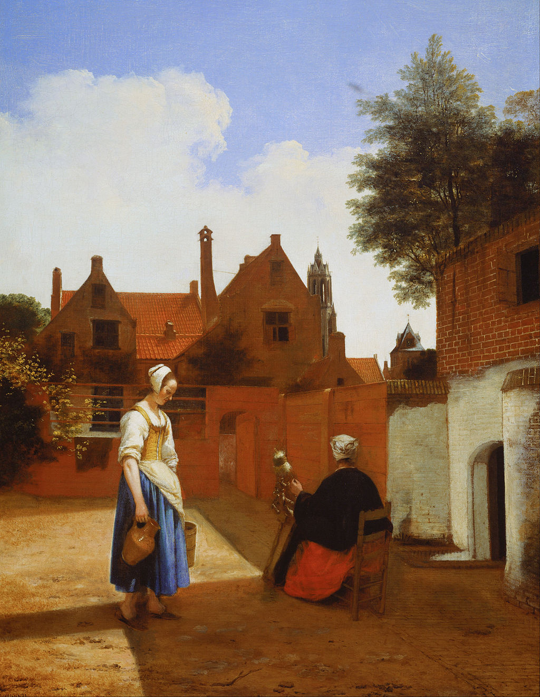

<head>
<meta charset="UTF-8" />
<meta name="keywords" content="drawing, painting" />
<meta name="description" content="drawings by Sunjy" />
<title>Sunjy</title>
<link rel="shortcut icon" type="image/x-icon" href="../../mImages/mCommon/favicon.ico" media="screen" />
<link rel="stylesheet" type="text/css" href="../../mCsses/mCommon/mCssA.css" />
<link rel="stylesheet" type="text/css" href="../../mCsses/mCommon/mCssB.css" />
<link rel="stylesheet" type="text/css" href="../../mCsses/mCommon/mCssC.css" />
<link rel="stylesheet" type="text/css" href="../../mCsses/mCommon/mCssD.css" />
<link rel="stylesheet" type="text/css" href="../../mCsses/mContent/mCssA.css" />
<link rel="stylesheet" type="text/css" href="../../mCsses/mContent/mCssB.css" />
<link rel="stylesheet" type="text/css" href="../../mCsses/mContent/mCssC.css" />
<link rel="stylesheet" type="text/css" href="../../mCsses/mContent/mCssD.css" />
</head>
<script type="text/javascript" src="../../mScripts/mContent/mContentAA.js" /></script>
<script type="text/javascript" src="../../mScripts/mContent/mContentAB.js" /></script>
<script type="text/javascript" src="../../mScripts/mContent/mContentAC.js" /></script>
<script type="text/javascript" src="../../mScripts/mContent/mContentAD.js" /></script>
<script type="text/javascript"></script> 
<script type="text/javascript">
document.write('<div class="mImgAbsolute"></div>');
/*
document.write('<p class="mFontSizeBColor" />From a white paper...</p>');
document.write('<table class="center"><tr><td>');
document.write('');
document.write('</td></tr></table>');
*/
</script>


<script type="text/javascript">
document.write('<p class="mFontSizeBColor" />Courtyard in Delft at Evening: a Woman Spinning</p>');
document.write('<p class="mFontSizeSColor" />“Courtyard in Delft at Evening: a Woman Spinning” by Pieter de Hooch depicts two women working on their domestic tasks. The standing figure who is walking from the sunlight into shadow is carrying a jug and a bucket.<br><br>The seated figure seen in shadow is spinning wool. This painting is one of De Hooch’s earliest paintings of a courtyard scene, dated 1657, during a time that when De Hooch and Vermeer were both working in Delft.<br><br>The viewer is invited to enter what is essentially a private world.<br><br>De Hooch knew Delft well as he was married in Delft in 1654, and while in Delft, de Hooch trained with the painters Carel Fabritius and Nicolaes Maes, who were early members of the Delft School.<br><br>He had also become a member of the painters’ guild in Deft, so he knew the city well and added detail he was familiar with, such as on the right of the painting beyond the house could be seen two towers.<br><br>The taller tower is the Nieuwe Kerk (New Church), and the smaller one is the Town Hall.<br></p>');
document.write('<table class="center" /><tr><td>');
document.write('<br>The seated figure seen in shadow is spinning wool. This painting is one of De Hooch’s earliest paintings of a courtyard scene, dated 1657, during a time that when De Hooch and Vermeer were both working in Delft.<br><br>The viewer is invited to enter what is essentially a private world.<br><br>De Hooch knew Delft well as he was married in Delft in 1654, and while in Delft, de Hooch trained with the painters Carel Fabritius and Nicolaes Maes, who were early members of the Delft School.<br><br>He had also become a member of the painters’ guild in Deft, so he knew the city well and added detail he was familiar with, such as on the right of the painting beyond the house could be seen two towers.<br><br>The taller tower is the Nieuwe Kerk (New Church), and the smaller one is the Town Hall.<br>" />');
document.write('</td></tr></table>');
</script>


